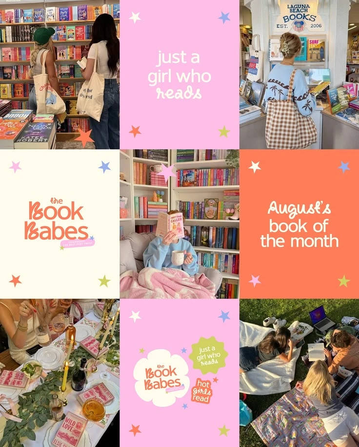
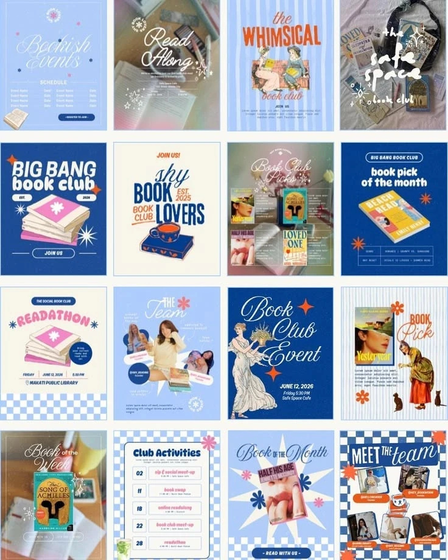
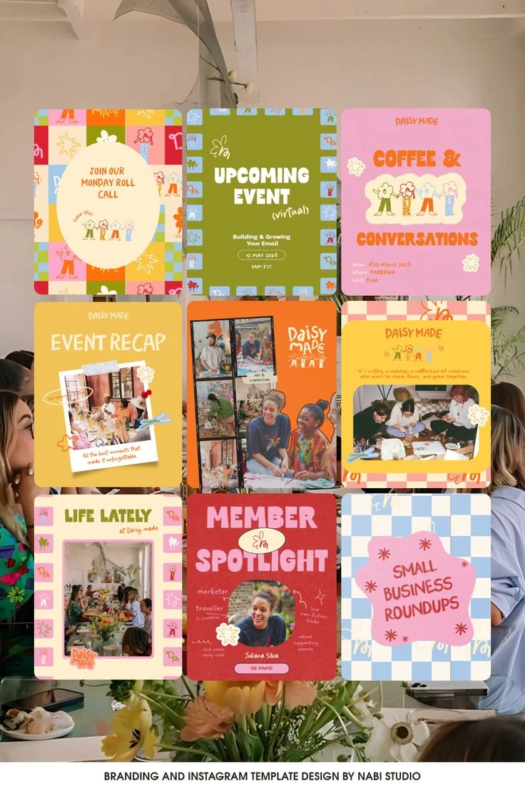
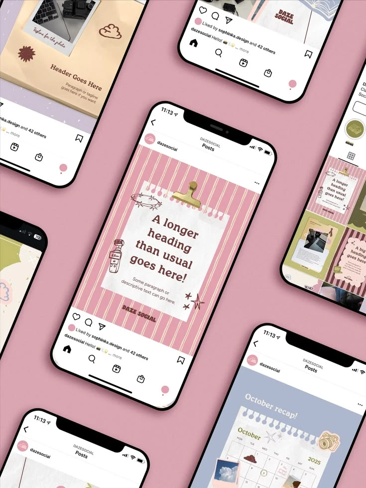
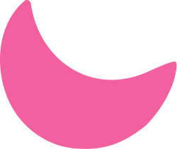

<title>Núcleo da marca Trama</title>
<meta name="claude:viewport-fit-sides" content="cover">
<link rel="preconnect" href="https://fonts.googleapis.com">
<link rel="preconnect" href="https://fonts.gstatic.com" crossorigin>
<link href="https://fonts.googleapis.com/css2?family=Alfa+Slab+One&family=Young+Serif&family=Dela+Gothic+One&family=Shrikhand&family=Pinyon+Script&family=Yesteryear&family=Quicksand:wght@400;500;600;700&family=Reenie+Beanie&family=Delicious+Handrawn&display=swap" rel="stylesheet">
<style>
:root{
  --chiclete:#F2609F; --algodao:#FFC2E2; --goiaba:#FF6B4A; --pessego:#FFB59E;
  --creme:#FFF4E0; --vinho:#5A1830; --lima:#CFDD5A; --pervinca:#8FA6F2;
  --cru:#F0E3C6; --noite:#3A1220; --branquinho:#F6F8FF; --cereja:#C63236; --grade:rgba(143,166,242,.3);
  --titulo:'Alfa Slab One',serif; --corpo:'Quicksand',sans-serif; --script:'Pinyon Script',cursive; --mao:'Reenie Beanie',cursive;
  color-scheme:light;
}
*{box-sizing:border-box;margin:0;font-synthesis-weight:none}
html{background:var(--creme)}
body{font-family:var(--corpo);font-weight:500;color:var(--vinho);background:var(--creme);line-height:1.5;overflow-x:hidden}
.t{font-family:var(--titulo);font-weight:900;font-variation-settings:"SOFT" 100,"opsz" 144;line-height:1.02;letter-spacing:-.01em}
.sc{font-family:var(--script);font-weight:400;line-height:1}
.hand{font-family:var(--mao)}
.wrap{max-width:1080px;margin:0 auto;padding-left:max(16px,env(safe-area-inset-left,0px));padding-right:max(16px,env(safe-area-inset-right,0px))}

/* padrões */
.xadrez{background:conic-gradient(var(--p1) 25%,var(--p2) 0 50%,var(--p1) 0 75%,var(--p2) 0) 0 0/var(--ps,44px) var(--ps,44px)}
.listra{background:repeating-linear-gradient(90deg,var(--p1) 0 var(--lw,22px),var(--p2) var(--lw,22px) calc(var(--lw,22px) + 5px))}
.bolinha{background:radial-gradient(circle at 50% 50%,var(--p2) 0 20%,transparent 21%) 0 0/var(--ps,34px) var(--ps,34px),var(--p1)}
.grao{position:relative;isolation:isolate}
.grao::after{content:"";position:absolute;inset:0;pointer-events:none;z-index:5;mix-blend-mode:multiply;opacity:.38;
  background-image:url("data:image/svg+xml;utf8,<svg xmlns='http://www.w3.org/2000/svg' width='220' height='220'><filter id='n'><feTurbulence type='fractalNoise' baseFrequency='.9' numOctaves='2' stitchTiles='stitch'/><feColorMatrix values='0 0 0 0 .35  0 0 0 0 .2  0 0 0 0 .2  0 0 0 .55 0'/></filter><rect width='100%' height='100%' filter='url(%23n)'/></svg>")}

/* header */
.hero{--p1:var(--chiclete);--p2:var(--algodao);--lw:26px;padding:56px 0 72px;position:relative}
.hero.listra{background:linear-gradient(var(--grade) 1px,transparent 1px) 0 0/28px 28px,linear-gradient(90deg,var(--grade) 1px,transparent 1px) 0 0/28px 28px,var(--branquinho)}
.hero .wrap{display:grid;grid-template-columns:1fr auto;gap:28px;align-items:center}
.hero-card{background:var(--creme);padding:34px 30px 38px;position:relative;transform:rotate(-1deg);box-shadow:0 8px 0 rgba(90,24,48,.12)}
.hero-card h1{font-size:clamp(40px,7vw,76px);color:var(--vinho)}
.hero-card h1 em{font-style:normal;color:var(--chiclete)}
.hero-card p{max-width:46ch;margin-top:14px;font-size:17px}
.hero-card .sc{font-size:34px;color:var(--cereja);margin-top:6px}
.clip{position:absolute;top:-30px;left:40px;width:30px;z-index:6}
.hero .logo-box{background:var(--algodao);padding:18px;border-radius:50%;width:244px;height:244px;display:grid;place-items:center}
@media(max-width:760px){.hero .wrap{grid-template-columns:1fr}.hero .logo-box{margin:0 auto}}

/* seções */
section{padding:56px 0 8px}
.eyebrow{font-weight:700;font-size:13px;letter-spacing:.14em;text-transform:uppercase;color:var(--vinho);margin-bottom:6px}
h2.t{font-size:clamp(30px,5vw,46px);margin-bottom:10px}
.lead{max-width:62ch;font-size:17px;margin-bottom:26px}
.note{font-size:14px;opacity:.85}

/* referências */
.refs{display:grid;grid-template-columns:repeat(4,1fr);gap:18px}
.ref{background:#fff;padding:10px 10px 16px;box-shadow:0 6px 0 rgba(90,24,48,.1)}
.ref:nth-child(odd){transform:rotate(-.8deg)}.ref:nth-child(even){transform:rotate(.7deg)}
.ref img{width:100%;aspect-ratio:3/4;object-fit:cover;object-position:top;display:block}
.ref b{display:block;font-family:var(--titulo);font-weight:900;font-variation-settings:"SOFT" 100;font-size:19px;margin:10px 0 2px}
.ref span{font-size:14px;display:block}
@media(max-width:900px){.refs{grid-template-columns:repeat(2,1fr)}}
@media(max-width:480px){.refs{grid-template-columns:1fr}}

/* paleta */
.sw{display:grid;grid-template-columns:repeat(4,1fr);gap:14px}
.swc{border-radius:18px;padding:18px 16px;min-height:150px;display:flex;flex-direction:column;justify-content:flex-end;position:relative}
.swc b{font-family:var(--titulo);font-weight:900;font-variation-settings:"SOFT" 100;font-size:22px}
.swc code{font-family:var(--corpo);font-weight:700;font-size:14px;letter-spacing:.04em}
.swc small{font-size:12.5px;margin-top:4px;opacity:.95}
.swc.dom{grid-column:span 2;min-height:190px}
@media(max-width:820px){.sw{grid-template-columns:repeat(2,1fr)}.swc.dom{grid-column:span 2}}
.prop{display:flex;height:46px;border-radius:14px;overflow:hidden;margin:22px 0 6px}
.prop div{height:100%}
.pairs{display:grid;grid-template-columns:repeat(auto-fit,minmax(150px,1fr));gap:12px;margin-top:22px}
.pair{border-radius:14px;padding:16px 14px;display:flex;flex-direction:column;gap:4px}
.pair .t{font-size:30px}
.pair small{font-size:12px;font-weight:600}
.ok{display:inline-block;margin-top:2px;font-weight:700}

/* tipografia */
.fonts{display:grid;grid-template-columns:1.2fr 1fr;gap:18px}
@media(max-width:820px){.fonts{grid-template-columns:1fr}}
.fcard{background:#fff;border-radius:20px;padding:26px 24px;box-shadow:0 6px 0 rgba(90,24,48,.1)}
.fcard .tag{font-size:12px;font-weight:700;letter-spacing:.12em;text-transform:uppercase;color:var(--vinho)}
.fcard .big{margin:6px 0 8px}
.fcard.pink{background:var(--chiclete);color:var(--vinho);box-shadow:0 6px 0 rgba(90,24,48,.2)}
.fcard.pink .tag{color:var(--vinho)}
.fcard.goiaba{background:var(--goiaba)}
.fcard.goiaba .tag{color:var(--vinho)}
.hier{background:var(--algodao);border-radius:20px;padding:26px 24px;margin-top:18px;display:grid;grid-template-columns:auto 1fr;gap:22px;align-items:center}
@media(max-width:600px){.hier{grid-template-columns:1fr}}
.hier .sc{font-size:44px;color:var(--chiclete)}

/* logo */
.logo{position:relative;aspect-ratio:1;width:var(--w,200px);flex:none}
.logo i{position:absolute;inset:0;display:block;-webkit-mask-size:contain;mask-size:contain;-webkit-mask-repeat:no-repeat;mask-repeat:no-repeat;-webkit-mask-position:center;mask-position:center}
.l-a{background:var(--a);-webkit-mask-image:url(../assets/logo-trama.svg);mask-image:url(../assets/logo-trama.svg)}
.logos{display:grid;grid-template-columns:repeat(auto-fit,minmax(210px,1fr));gap:16px}
.lg{border-radius:20px;padding:22px 16px 14px;display:flex;flex-direction:column;align-items:center;gap:10px;text-align:center}
.lg small{font-size:12.5px;font-weight:600}
.lg[style*="background:var(--chiclete)"] small{color:var(--noite)}

/* elementos */
.banco .fam{margin-bottom:18px}.banco h4{font-family:var(--titulo);font-size:16px;margin:0 0 8px;color:var(--vinho)}
.fgrid{display:grid;grid-template-columns:repeat(auto-fill,minmax(112px,1fr));gap:10px}
.fgrid figure{margin:0;background:var(--creme);border-radius:14px;padding:10px 8px 6px;text-align:center}
.fgrid img{width:100%;height:84px;object-fit:contain;display:block}
.fgrid figcaption{font-size:11px;color:var(--vinho);opacity:.7;margin-top:4px}
.recolor{display:flex;flex-wrap:wrap;gap:10px;background:var(--creme);border-radius:14px;padding:12px}
.rc{width:76px;height:76px;background:var(--c);-webkit-mask:url(../Elementos/Flor%202.svg) center/contain no-repeat;mask:url(../Elementos/Flor%202.svg) center/contain no-repeat}.els{display:grid;grid-template-columns:repeat(3,1fr);gap:18px}
@media(max-width:860px){.els{grid-template-columns:1fr}}
.elbox{background:#fff;border-radius:20px;padding:20px;box-shadow:0 6px 0 rgba(90,24,48,.1)}
.elbox h3{font-family:var(--titulo);font-weight:900;font-variation-settings:"SOFT" 100;font-size:22px;margin-bottom:2px}
.elbox p{font-size:13.5px;margin-bottom:14px}
.patgrid{display:grid;grid-template-columns:1fr 1fr;gap:10px}
.pat{height:84px;border-radius:12px;position:relative;display:grid;place-items:end start;padding:8px 10px;font-size:12px;font-weight:700}
.shapes{display:flex;flex-wrap:wrap;gap:6px;align-items:center}
.paper{position:relative;min-height:230px}
.papel-demo{background:var(--creme);width:150px;padding:22px 14px 26px;position:absolute;left:6px;top:14px;transform:rotate(-3deg);box-shadow:0 4px 0 rgba(90,24,48,.12);font-size:13px;z-index:2}
.fita{position:absolute;width:84px;height:24px;background:rgba(207,221,90,.85);z-index:4;clip-path:polygon(0 0,5% 25%,0 50%,5% 75%,0 100%,100% 100%,95% 75%,100% 50%,95% 25%,100% 0)}
.fita.w{background:repeating-linear-gradient(90deg,rgba(242,96,159,.85) 0 8px,rgba(255,244,224,.9) 8px 14px)}
.polaroid{position:absolute;right:4px;top:48px;width:118px;background:#fff;padding:8px 8px 26px;transform:rotate(5deg);box-shadow:0 4px 0 rgba(90,24,48,.14);z-index:3}
.polaroid div{height:96px;background:repeating-linear-gradient(45deg,var(--algodao) 0 8px,var(--creme) 8px 16px);display:grid;place-items:center;font-size:11px;font-weight:700}
.polaroid span{position:absolute;bottom:4px;left:0;right:0;text-align:center;font-family:var(--mao);font-size:15px}
.todo{border:2px dashed var(--chiclete);border-radius:14px;padding:16px;font-size:13.5px;background:var(--creme)}

/* combinações do logo */
.combos{display:grid;grid-template-columns:repeat(auto-fill,minmax(210px,1fr));gap:14px;margin-top:22px}
.cb{border-radius:20px;aspect-ratio:1;position:relative;overflow:hidden;display:grid;place-items:center;box-shadow:0 6px 0 rgba(90,24,48,.1)}
.cb .logo{z-index:2}
.cb .cap{position:absolute;left:0;right:0;bottom:0;z-index:3;padding:7px 12px 9px;font-size:11.5px;font-weight:700;line-height:1.25;display:flex;justify-content:space-between;gap:8px;align-items:baseline;background:rgba(255,244,224,.94);color:var(--vinho)}
.cb .cap em{font-style:normal;font-weight:600;opacity:.8;white-space:nowrap}
.sub{font-weight:700;font-size:13px;letter-spacing:.12em;text-transform:uppercase;margin:30px 0 4px}
/* elementos recoloridos por máscara */
.el{display:block;background:var(--c);-webkit-mask:var(--u) center/contain no-repeat;mask:var(--u) center/contain no-repeat;flex:none}
.cut{filter:url(#cutf);display:inline-block;line-height:0}
.abs{position:absolute}
/* aplicações */
.apps{display:flex;flex-wrap:wrap;gap:34px 40px;align-items:flex-end;justify-content:center;background:var(--algodao);border-radius:26px;padding:56px 24px 44px}
.app{display:flex;flex-direction:column;align-items:center;gap:14px}
.app small{font-size:12.5px;font-weight:600;text-align:center;max-width:240px}
.ecobag{position:relative;width:250px;height:310px;margin-top:70px}
.alca{position:absolute;top:-64px;left:56px;width:138px;height:100px;border:12px solid #DBC9A0;border-bottom:none;border-radius:80px 80px 0 0}
.corpo{position:absolute;inset:0;background:var(--cru);border-radius:4px 4px 10px 10px;box-shadow:0 8px 0 rgba(90,24,48,.14);display:flex;flex-direction:column;align-items:center;justify-content:center;gap:10px;overflow:hidden}
.corpo .selo{width:176px;height:176px;border-radius:50%;background:var(--chiclete);display:grid;place-items:center;position:relative}
.corpo .frase{font-size:19px;text-align:center;line-height:1.05;max-width:190px}
.mp{width:112px;height:340px;position:relative;box-shadow:0 8px 0 rgba(90,24,48,.14);overflow:hidden;display:flex;flex-direction:column;align-items:center;justify-content:center;gap:12px;text-align:center;padding:16px 10px}
.cartela{width:300px;background:#fff;border-radius:6px;padding:22px 16px;box-shadow:0 8px 0 rgba(90,24,48,.14);display:grid;grid-template-columns:repeat(3,1fr);gap:8px 6px;align-items:center;justify-items:center}
.cartela .pill{padding:8px 12px;border-radius:99px;border:4px solid #fff;font-size:11.5px;font-weight:700;text-align:center;line-height:1.1;box-shadow:0 0 0 1px rgba(90,24,48,.12)}
.cartela .sticker{display:grid;place-items:center;text-align:center}
.caneca{width:340px;height:140px;border-radius:10px;position:relative;box-shadow:0 8px 0 rgba(90,24,48,.14);overflow:hidden;display:flex;align-items:center;justify-content:space-around;padding:0 18px}

/* regras */
.rules{display:grid;grid-template-columns:1fr 1fr;gap:18px}
@media(max-width:760px){.rules{grid-template-columns:1fr}}
.rbox{background:#fff;border-radius:20px;padding:22px 22px 18px;box-shadow:0 6px 0 rgba(90,24,48,.1)}
.rbox h3{font-family:var(--titulo);font-weight:900;font-variation-settings:"SOFT" 100;font-size:22px;margin-bottom:8px}
.rbox ul{padding-left:18px;display:grid;gap:7px;font-size:14.5px}
.rbox.sempre{background:var(--lima)}
.rbox.nunca{background:var(--pessego)}
.rbox.aberto{grid-column:1/-1;background:var(--creme);border:2px dashed var(--chiclete);box-shadow:none}
footer{padding:48px 0 60px;font-size:13px;opacity:.8}
</style>

<svg width="0" height="0" style="position:absolute" aria-hidden="true">
  <defs>
    <filter id="cutf" x="-25%" y="-25%" width="150%" height="150%"><feMorphology in="SourceAlpha" operator="dilate" radius="3.2" result="d"/><feFlood flood-color="#fff"/><feComposite in2="d" operator="in" result="w"/><feMerge><feMergeNode in="w"/><feMergeNode in="SourceGraphic"/></feMerge></filter>
    <symbol id="flor" viewBox="0 0 120 120"><g><circle cx="90" cy="60" r="24"/><circle cx="75" cy="86" r="24"/><circle cx="45" cy="86" r="24"/><circle cx="30" cy="60" r="24"/><circle cx="45" cy="34" r="24"/><circle cx="75" cy="34" r="24"/><circle cx="60" cy="60" r="30"/></g></symbol>
    <symbol id="blob" viewBox="0 0 120 120"><path d="M60 8c20-6 44 8 50 30s-4 38-20 52-42 22-62 8S2 66 10 44 38 14 60 8z"/></symbol>
    <symbol id="lua" viewBox="0 0 120 120"><path d="M8 78A52 52 0 0 1 112 78Z"/></symbol>
    <symbol id="gota" viewBox="0 0 120 120"><path d="M60 8C90 44 102 62 102 82a42 42 0 0 1-84 0C18 62 30 44 60 8z"/></symbol>
    <symbol id="bola" viewBox="0 0 120 120"><circle cx="60" cy="60" r="50"/></symbol>
    <symbol id="clipe" viewBox="0 0 40 110"><path d="M12 72V24a10 10 0 0 1 20 0v60a14 14 0 0 1-28 0V32" fill="none" stroke="#C9A44C" stroke-width="4.5" stroke-linecap="round"/><path d="M12 72V24a10 10 0 0 1 20 0v60a14 14 0 0 1-28 0V32" fill="none" stroke="#F3DC96" stroke-width="1.4" stroke-linecap="round" transform="translate(-.8 -.8)"/></symbol>
  </defs>
</svg>

<!-- HERO -->
<header class="hero listra">
  <div class="wrap">
    <div class="hero-card">
      <svg class="clip" viewBox="0 0 40 110" height="82"><use href="#clipe"/></svg>
      <div class="eyebrow">Etapa 5 · núcleo da marca · v3</div>
      <h1 class="t">A Trama do Rio, <em>do jeito que a gente quer</em>.</h1>
      <p>Base mínima para fazer o kit de Natal (ecobag, marca-páginas, adesivos e caneca). Tudo aqui sai das suas referências <b>07, 08, 09 e 12</b>. É para você reagir, não para aprovar tudo de uma vez.</p>
      <div class="sc">21 de outubro de 2026</div>
    </div>
    <div class="logo-box">
      <div class="logo" style="--w:206px;--a:var(--cereja)"><i class="l-a"></i></div>
    </div>
  </div>
</header>

<main class="wrap">

<!-- 1 REFERÊNCIAS -->
<section>
  <div class="eyebrow">01 · De onde isso vem</div>
  <h2 class="t">As quatro referências que mandam</h2>
  <p class="lead">Estas são as que você marcou. O que está nesta página foi tirado delas, e embaixo de cada uma está o que foi pego. O que não aparece em nenhuma das quatro ficou de fora.</p>
  <div class="refs">
    <div class="ref"><b>07 · Book Babes</b><span><b style="display:inline;font-size:14px;font-family:var(--corpo);font-variation-settings:normal">Pegamos:</b> o rosa forte como dominante, blocos de cor lisos alternando com foto, frases curtas.</span></div>
    <div class="ref"><b>08 · Templates book club</b><span><b style="display:inline;font-size:14px;font-family:var(--corpo);font-variation-settings:normal">Pegamos:</b> fundo de padrão (xadrez e listra), painel por cima, script elegante com letra gorda, tudo como uma família.</span></div>
    <div class="ref"><b>09 · Daisy Made</b><span><b style="display:inline;font-size:14px;font-family:var(--corpo);font-variation-settings:normal">Pegamos:</b> uma cor vibrante em bloco, título gordo, foto em janela ou polaroid, humor desenhado de uma família só.</span></div>
    <div class="ref"><b>12 · Daze Social</b><span><b style="display:inline;font-size:14px;font-family:var(--corpo);font-variation-settings:normal">Pegamos:</b> listra rosa, papel com clipe, texto em vinho, grão de papel.</span></div>
  </div>
</section>

<!-- 2 PALETA -->
<section>
  <div class="eyebrow">02 · Cor</div>
  <h2 class="t">Rosa forte manda. O resto acompanha.</h2>
  <p class="lead">A estrutura vem do quadro de cores do 06 (metade pastéis, algumas cores saturadas e um escuro). O rosa é o do 07 e do 12, mais firme que o pastel dos prompts anteriores. Texto nunca em preto: é vinho.</p>
  <div class="sw">
    <div class="swc dom" style="background:var(--chiclete);color:var(--noite)"><b>Chiclete</b><code>#F2609F</code><small>Dominante. Fundos, selos e o logo principal. Referências 07 e 12.</small></div>
    <div class="swc" style="background:var(--goiaba);color:var(--vinho)"><b>Goiaba</b><code>#FF6B4A</code><small>Coral de apoio. Blocos e acentos. 07 e 08.</small></div>
    <div class="swc" style="background:var(--cereja);color:var(--creme)"><b>Cereja</b><code>#C63236</code><small>Cor de destaque. Logo do topo e palavras de destaque sobre fundo claro.</small></div>
    <div class="swc" style="background:var(--algodao);color:var(--vinho)"><b>Algodão-doce</b><code>#FFC2E2</code><small>Rosa claro. Listra fina, painéis, respiro.</small></div>
    <div class="swc" style="background:var(--pessego);color:var(--vinho)"><b>Pêssego</b><code>#FFB59E</code><small>Pastel quente entre o rosa e o coral.</small></div>
    <div class="swc" style="background:var(--creme);color:var(--vinho);box-shadow:inset 0 0 0 2px rgba(90,24,48,.12)"><b>Creme</b><code>#FFF4E0</code><small>Fundo e papel. Nunca branco puro.</small></div>
    <div class="swc" style="background:var(--branquinho);color:var(--vinho);box-shadow:inset 0 0 0 2px rgba(90,24,48,.12)"><b>Branquinho</b><code>#F6F8FF</code><small>Branco com um fio de azul. Fundo claro, mais leve que o creme.</small></div>
    <div class="swc" style="background:var(--vinho);color:var(--creme)"><b>Vinho</b><code>#5A1830</code><small>Todo o texto e o logo de uso corrente. Referência 12.</small></div>
    <div class="swc" style="background:var(--noite);color:var(--creme)"><b>Vinho noite</b><code>#3A1220</code><small>Segundo fundo escuro, para uso pontual.</small></div>
    <div class="swc" style="background:var(--lima);color:var(--vinho)"><b>Lima</b><code>#CFDD5A</code><small>Confete e fita. Pouco.</small></div>
    <div class="swc" style="background:var(--pervinca);color:var(--vinho)"><b>Pervinca</b><code>#8FA6F2</code><small>O frio que equilibra. Confete e detalhe.</small></div>
  </div>
  <div class="prop" title="Proporção sugerida">
    <div style="width:30%;background:var(--chiclete)"></div><div style="width:14%;background:var(--goiaba)"></div><div style="width:3%;background:var(--cereja)"></div><div style="width:21%;background:var(--creme);box-shadow:inset 0 0 0 2px rgba(90,24,48,.12)"></div><div style="width:12%;background:var(--algodao)"></div><div style="width:6%;background:var(--pessego)"></div><div style="width:9%;background:var(--vinho)"></div><div style="width:3%;background:var(--lima)"></div><div style="width:2%;background:var(--pervinca)"></div>
  </div>
  <p class="note">Proporção sugerida por peça: rosa e coral juntos perto da metade, creme e claros no resto, vinho no texto, lima e pervinca só de confete.</p>
  <div class="pairs">
    <div class="pair" style="background:var(--creme);box-shadow:inset 0 0 0 2px rgba(90,24,48,.12);color:var(--vinho)"><span class="t">Aa</span><small>vinho no creme · texto de qualquer tamanho (12,0:1)</small></div>
    <div class="pair" style="background:var(--algodao);color:var(--vinho)"><span class="t">Aa</span><small>vinho no algodão · qualquer tamanho (8,8:1)</small></div>
    <div class="pair" style="background:var(--chiclete);color:var(--noite)"><span class="t">Aa</span><small>vinho noite no chiclete · qualquer tamanho (5,4:1)</small></div>
    <div class="pair" style="background:var(--goiaba);color:var(--creme)"><span class="t">Aa</span><small>creme na goiaba · <b>só título grande</b> (2,6:1)</small></div>
    <div class="pair" style="background:var(--lima);color:var(--vinho)"><span class="t">Aa</span><small>vinho na lima · qualquer tamanho (8,8:1)</small></div>
    <div class="pair" style="background:var(--vinho);color:var(--lima)"><span class="t">Aa</span><small>lima no vinho · detalhe e título</small></div>
    <div class="pair" style="background:var(--noite);color:var(--chiclete)"><span class="t">Aa</span><small>chiclete no vinho noite · título e detalhe (5,4:1)</small></div>
    <div class="pair" style="background:var(--creme);color:var(--cereja);box-shadow:inset 0 0 0 2px rgba(90,24,48,.12)"><span class="t">Aa</span><small>cereja no creme · qualquer tamanho (4,9:1)</small></div>
    <div class="pair" style="background:var(--cereja);color:var(--creme)"><span class="t">Aa</span><small>creme na cereja · qualquer tamanho (4,9:1)</small></div>
  </div>
</section>

<!-- 3 TIPOGRAFIA -->
<section>
  <div class="eyebrow">03 · Letra</div>
  <h2 class="t">Quatro vozes, uma letra de cada por peça</h2>
  <p class="lead">Cada voz tem mais de uma opção, mas <b>cada peça usa só uma letra por voz</b>. Se o título é Young Serif, não entra Shrikhand na mesma arte. O que combina é uma letra de cada voz: título, script, texto e mão.</p>
  <style>
    .vgrid{display:grid;grid-template-columns:repeat(auto-fit,minmax(250px,1fr));gap:14px;margin-bottom:22px}
    .vtit{font-size:13px;font-weight:700;letter-spacing:.12em;text-transform:uppercase;margin:6px 0 10px;display:flex;gap:10px;align-items:baseline;flex-wrap:wrap}
    .vtit small{font-weight:600;letter-spacing:0;text-transform:none;opacity:.85}
    .vcard{border-radius:20px;padding:20px 18px 16px;box-shadow:0 6px 0 rgba(90,24,48,.1);min-width:0;display:grid;gap:8px;align-content:start}
    .vcard .nm{font-size:12px;font-weight:700;letter-spacing:.1em;text-transform:uppercase}
    .vcard p{font-size:13.5px}
    .vcard .sp{overflow-wrap:anywhere}
    .rr{display:grid;grid-template-columns:repeat(auto-fit,minmax(280px,1fr));gap:16px;margin-top:8px}
    .rr .ok,.rr .no{border-radius:22px;padding:18px;box-shadow:0 6px 0 rgba(90,24,48,.1);min-width:0}
    .rr .ok{background:var(--lima)} .rr .no{background:var(--pessego)}
    .rr h3{font-family:var(--titulo);font-weight:400;font-size:20px;margin-bottom:10px}
    .mini{background:var(--creme);border-radius:14px;padding:16px;display:grid;gap:6px;min-width:0}
    .mini .a{overflow-wrap:anywhere}
  </style>

  <div class="vtit">Título <small>escolha uma por peça</small></div>
  <div class="vgrid">
    <div class="vcard" style="background:var(--algodao)"><div class="nm">Alfa Slab One</div><div class="sp" style="font-family:'Alfa Slab One',serif;font-size:34px;line-height:1.05;color:var(--vinho)">Leitura do mês</div><p>Slab pesada e firme. Funciona melhor em caixa alta.</p></div>
    <div class="vcard" style="background:var(--algodao)"><div class="nm">Young Serif</div><div class="sp" style="font-family:'Young Serif',serif;font-size:34px;line-height:1.05;color:var(--vinho)">Leitura do mês</div><p>Calma e editorial. É a que dá o lado literário.</p></div>
    <div class="vcard" style="background:var(--algodao)"><div class="nm">Dela Gothic One</div><div class="sp" style="font-family:'Dela Gothic One',system-ui;font-size:28px;line-height:1.1;color:var(--vinho)">Leitura do mês</div><p>Atitude em caixa alta, para poucas palavras.</p></div>
    <div class="vcard" style="background:var(--algodao)"><div class="nm">Shrikhand</div><div class="sp" style="font-family:'Shrikhand',cursive;font-size:34px;line-height:1.05;color:var(--vinho)">Leitura do mês</div><p>Itálica fluida dos anos 70. Uma ou duas palavras.</p></div>
  </div>

  <div class="vtit">Script <small>escolha uma por peça, em uma ou duas palavras</small></div>
  <div class="vgrid">
    <div class="vcard" style="background:var(--creme);box-shadow:inset 0 0 0 2px rgba(90,24,48,.12),0 6px 0 rgba(90,24,48,.1)"><div class="nm">Pinyon Script</div><div class="sp" style="font-family:'Pinyon Script',cursive;font-size:50px;line-height:1.05;color:var(--cereja)">setembro</div><p>Formal e fina. Precisa de tamanho grande.</p></div>
    <div class="vcard" style="background:var(--creme);box-shadow:inset 0 0 0 2px rgba(90,24,48,.12),0 6px 0 rgba(90,24,48,.1)"><div class="nm">Yesteryear</div><div class="sp" style="font-family:'Yesteryear',cursive;font-size:46px;line-height:1.05;color:var(--cereja)">setembro</div><p>Retrô e gorda, com mais humor. Combina com Shrikhand ou slab.</p></div>
  </div>

  <div class="vtit">Texto <small>uma só</small></div>
  <div class="vgrid">
    <div class="vcard" style="background:var(--branquinho);box-shadow:inset 0 0 0 2px rgba(90,24,48,.12),0 6px 0 rgba(90,24,48,.1)"><div class="nm">Quicksand</div><div style="font-family:'Quicksand',sans-serif;font-weight:500;font-size:16px">Encontro no sábado, no parque. <b style="font-weight:700">Leve o livro</b> e a opinião.</div><p>Todo texto corrido, legenda e informação. Regular 500, negrito 700 para uma palavra.</p></div>
  </div>

  <div class="vtit">Mão <small>escolha uma por peça, em um elemento só</small></div>
  <div class="vgrid">
    <div class="vcard" style="background:var(--algodao)"><div class="nm">Reenie Beanie</div><div class="sp" style="font-family:'Reenie Beanie',cursive;font-size:40px;line-height:1.05;color:var(--vinho)">migas, cap. 12 me quebrou</div><p>Rabisco fino e rápido. Precisa de tamanho grande.</p></div>
    <div class="vcard" style="background:var(--algodao)"><div class="nm">Delicious Handrawn</div><div class="sp" style="font-family:'Delicious Handrawn',cursive;font-size:34px;line-height:1.1;color:var(--vinho)">migas, cap. 12 me quebrou</div><p>Traço desenhado, com peso médio. Combina com doodles.</p></div>
  </div>

  <div class="vtit">A regra, num exemplo</div>
  <div class="rr">
    <div class="ok"><h3>Certo: uma letra por voz</h3>
      <div class="mini">
        <div style="font-family:'Pinyon Script',cursive;font-size:30px;color:var(--cereja);line-height:1">setembro</div>
        <div style="font-family:'Young Serif',serif;font-size:30px;line-height:1.05">Leitura do mês</div>
        <div style="font-family:'Quicksand',sans-serif;font-weight:500;font-size:14px">Encontro no sábado, no parque.</div>
        <div style="font-family:'Reenie Beanie',cursive;font-size:26px;color:var(--cereja)">leva o livro!</div>
      </div>
      <p style="font-size:13.5px;margin-top:10px">Young Serif, Pinyon Script, Quicksand e Reenie Beanie: uma de cada voz.</p>
    </div>
    <div class="no"><h3>Errado: duas letras de título</h3>
      <div class="mini">
        <div style="font-family:'Pinyon Script',cursive;font-size:30px;color:var(--cereja);line-height:1">setembro</div>
        <div style="font-family:'Young Serif',serif;font-size:30px;line-height:1.05">Leitura do mês</div>
        <div style="font-family:'Shrikhand',cursive;font-size:20px;line-height:1.1;color:var(--cereja)">Encontro no sábado</div>
        <div style="font-family:'Quicksand',sans-serif;font-weight:500;font-size:14px">no parque.</div>
      </div>
      <p style="font-size:13.5px;margin-top:10px">Young Serif e Shrikhand juntas: a mesma voz (título) com duas letras na mesma arte.</p>
    </div>
  </div>
  <p class="note" style="margin-top:14px"><b>Regra: todas precisam funcionar no Canva Pro.</b> Falta conferir no Canva da Lissa se aparecem Alfa Slab One, Young Serif, Dela Gothic One, Shrikhand, Pinyon Script, Yesteryear, Quicksand, Reenie Beanie e Delicious Handrawn. Se alguma não aparecer, dá para enviar o arquivo no Pro (é permitido para fontes livres). Todas são do Google Fonts.</p>
</section>

<!-- 4 LOGO -->
<section>
  <div class="eyebrow">04 · Logo</div>
  <h2 class="t">O logo fica. Só muda a cor.</h2>
  <p class="lead">O logo é dinâmico: cada aplicação usa uma tinta só, como carimbo, e a cor muda conforme o fundo. O <b>chiclete</b> é a cor principal, nos elementos principais da marca, sobre algodão-doce. O contraste dessa combinação é baixo (2,0), uma escolha de marca para o logo em tamanho grande. O <b>cereja</b> é a cor de destaque (o logo do topo desta página). O <b>vinho</b> entra com frequência, porque lê melhor em quase todo fundo. Goiaba, lima e as outras entram quando o fundo deixar. O traço do pincel fica, a versão colorida antiga sai e as estrelinhas não voltam. A página do teste do logo tem a matriz completa.</p>
  <div class="logos">
    <div class="lg" style="background:var(--algodao)"><div class="logo" style="--w:170px;--a:var(--chiclete)"><i class="l-a"></i></div><small>Chiclete sobre algodão-doce · a principal</small></div>
    <div class="lg" style="background:var(--creme);box-shadow:inset 0 0 0 2px rgba(90,24,48,.12)"><div class="logo" style="--w:170px;--a:var(--vinho)"><i class="l-a"></i></div><small>Vinho sobre creme · uso corrente</small></div>
    <div class="lg" style="background:var(--chiclete)"><div class="logo" style="--w:170px;--a:var(--vinho)"><i class="l-a"></i></div><small>Vinho sobre chiclete</small></div>
    <div class="lg" style="background:var(--goiaba)"><div class="logo" style="--w:170px;--a:var(--vinho)"><i class="l-a"></i></div><small>Vinho sobre goiaba</small></div>
    <div class="lg" style="background:var(--vinho);color:var(--creme)"><div class="logo" style="--w:170px;--a:var(--lima)"><i class="l-a"></i></div><small>Lima sobre vinho · variação</small></div>
    <div class="lg" style="background:var(--creme);box-shadow:inset 0 0 0 2px rgba(90,24,48,.12)"><div class="logo" style="--w:170px;--a:var(--cereja)"><i class="l-a"></i></div><small>Cereja sobre creme · destaque</small></div>
  </div>
  <p class="note" style="margin-top:12px">O logo agora é vetor (SVG), de uma cor só, com o &ldquo;do&rdquo; vazado. Serve para qualquer tamanho e qualquer tinta da paleta.</p>
  <div class="sub">Mais combinações, com outras cores da paleta</div>
  <p class="lead" style="margin-bottom:0">Cada quadro troca a tinta do logo e a cor do fundo, sem mais nada em volta. O número é o contraste entre o logo e o fundo (fórmula WCAG). Quanto mais alto, mais fácil de ler em tamanho pequeno.</p>
  <div class="combos" id="combos"></div>
  <p class="note" style="margin-top:14px"><b>Como ler:</b> 4,5 ou mais é seguro em qualquer tamanho. De 3 a 4,5 só com o logo grande. Abaixo de 3 é escolha de marca, como o chiclete sobre algodão-doce, e só funciona com o logo grande e sem texto pequeno ao lado.</p>
</section>

<!-- 5 ELEMENTOS -->
<section>
  <div class="eyebrow">05 · Caixa de elementos</div>
  <h2 class="t">O que cada peça pode usar</h2>
  <p class="lead">É uma caixa de ferramentas, não uma regra de montagem. Um post ou um item pode usar fita, papel e desenho, ou ser limpo, com um fundo e um título. Cada peça escolhe.</p>
  <div class="els">
    <div class="elbox">
      <h3>Fundos de padrão</h3><p>Referências 08, 09 e 12. Um padrão por peça, em duas cores da paleta, ou liso com grão. O quadriculado de caderno (branquinho com linhas em pervinca) é um dos fundos de padrão. Esta área ainda vai ser trabalhada.</p>
      <div class="patgrid">
        <div class="pat xadrez" style="--p1:var(--chiclete);--p2:var(--algodao);--ps:36px;color:var(--vinho)"><span style="background:var(--creme);padding:2px 8px;border-radius:99px">xadrez</span></div>
        <div class="pat listra" style="--p1:var(--chiclete);--p2:var(--algodao);--lw:18px;color:var(--vinho)"><span style="background:var(--creme);padding:2px 8px;border-radius:99px">listra</span></div>
        <div class="pat bolinha" style="--p1:var(--goiaba);--p2:var(--pessego);--ps:26px;color:var(--vinho)"><span style="background:var(--creme);padding:2px 8px;border-radius:99px">bolinha</span></div>
        <div class="pat grao" style="background:var(--chiclete);color:var(--vinho)"><span style="background:var(--creme);padding:2px 8px;border-radius:99px;position:relative;z-index:6">liso + grão</span></div>
        <div class="pat" style="background:linear-gradient(var(--grade) 1px,transparent 1px) 0 0/22px 22px,linear-gradient(90deg,var(--grade) 1px,transparent 1px) 0 0/22px 22px,var(--branquinho);color:var(--vinho);box-shadow:inset 0 0 0 2px rgba(90,24,48,.12)"><span style="background:var(--creme);padding:2px 8px;border-radius:99px">quadriculado</span></div>
      </div>
    </div>
    <div class="elbox">
      <h3>Formas soltas</h3><p>As formas reais da marca, em vetor: flor, folha, lua, arco, rabisco, ponto. Sempre lisas, sem contorno. O banco completo está logo abaixo.</p>
      <div class="shapes"></div>
    </div>
    <div class="elbox">
      <h3>Papel e fita</h3><p>A camada do 12: papel com clipe, fita, polaroid. A foto aparece em polaroid, janela, recorte ou fundo.</p>
      <div class="paper">
        <div class="fita" style="left:52px;top:4px;transform:rotate(-6deg)"></div>
        <div class="papel-demo rasgado"><b class="t" style="font-size:20px;display:block">Já volto!</b><span class="sc" style="font-size:24px;color:var(--cereja)">lendo</span></div>
        <div class="polaroid"><div>sua foto</div><span>migas</span></div>
        <div class="fita w" style="right:14px;top:36px;transform:rotate(14deg)"></div>
        <svg viewBox="0 0 40 110" height="70" style="position:absolute;left:112px;top:-4px;z-index:5;transform:rotate(6deg)"><use href="#clipe"/></svg>
      </div>
    </div>
  </div>
  <div class="banco">
    <div class="eyebrow" style="margin-top:34px">Banco de elementos · 43 formas em vetor (SVG)</div>
    <p class="lead" style="margin-bottom:14px">Todas lisas, sem contorno, de uma cor só cada. Como são vetor, qualquer uma pode trocar para qualquer cor da paleta e crescer sem perder nitidez. As cores abaixo já foram ajustadas aos tons exatos da paleta.</p>
    <div class="recolor" aria-label="A mesma forma em cada cor da paleta">
      <span class="rc" style="--c:var(--chiclete)"></span><span class="rc" style="--c:var(--cereja)"></span><span class="rc" style="--c:var(--goiaba)"></span><span class="rc" style="--c:var(--pessego)"></span><span class="rc" style="--c:var(--algodao)"></span><span class="rc" style="--c:var(--lima)"></span><span class="rc" style="--c:var(--pervinca)"></span><span class="rc" style="--c:var(--vinho)"></span>
    </div>
    <p class="note" style="margin:6px 0 18px">A mesma flor, uma tinta por vez.</p>
<div class="fam"><h4>Formas abstratas</h4><div class="fgrid"><figure><figcaption>Abstrato 1</figcaption></figure><figure><figcaption>Abstrato 2</figcaption></figure><figure><figcaption>Abstrato 3</figcaption></figure><figure><figcaption>Abstrato 4</figcaption></figure><figure><figcaption>Abstrato 5</figcaption></figure><figure><figcaption>Abstrato 6</figcaption></figure><figure><figcaption>Abstrato 7</figcaption></figure><figure><figcaption>Abstrato 8</figcaption></figure></div></div>
<div class="fam"><h4>Flores</h4><div class="fgrid"><figure><figcaption>Flor 1</figcaption></figure><figure><figcaption>Flor 2</figcaption></figure><figure><figcaption>Flor 3</figcaption></figure><figure><figcaption>Flor 4</figcaption></figure><figure><figcaption>Flor 5</figcaption></figure><figure><figcaption>Flor 6</figcaption></figure><figure><figcaption>Flor 7</figcaption></figure></div></div>
<div class="fam"><h4>Folhas</h4><div class="fgrid"><figure><figcaption>Folha 1</figcaption></figure><figure><figcaption>Folha 2</figcaption></figure><figure><figcaption>Folha 3</figcaption></figure><figure><figcaption>Folha 4</figcaption></figure></div></div>
<div class="fam"><h4>Lua</h4><div class="fgrid"><figure><figcaption>Lua</figcaption></figure></div></div>
<div class="fam"><h4>Arcos</h4><div class="fgrid"><figure><figcaption>Arco 1</figcaption></figure><figure><figcaption>Arco 2</figcaption></figure><figure><figcaption>Arco 3</figcaption></figure></div></div>
<div class="fam"><h4>Pontos e pétalas</h4><div class="fgrid"><figure><figcaption>Dots 1</figcaption></figure><figure><figcaption>Dots 2</figcaption></figure><figure><figcaption>Dots 3</figcaption></figure><figure><figcaption>Dots 4</figcaption></figure><figure><figcaption>Dots 5</figcaption></figure><figure><figcaption>Dots 6</figcaption></figure><figure><figcaption>Dots 7</figcaption></figure><figure><figcaption>Dots 8</figcaption></figure></div></div>
<div class="fam"><h4>Rabiscos</h4><div class="fgrid"><figure><figcaption>Rabisco 1</figcaption></figure><figure><figcaption>Rabisco 2</figcaption></figure><figure><figcaption>Rabisco 3</figcaption></figure><figure><figcaption>Rabisco 4</figcaption></figure><figure><figcaption>Rabisco 5</figcaption></figure><figure><figcaption>Rabisco 6</figcaption></figure><figure><figcaption>Rabisco 7</figcaption></figure><figure><figcaption>Rabisco 8</figcaption></figure></div></div>
<div class="fam"><h4>Retângulos e fitas</h4><div class="fgrid"><figure><figcaption>Retangulo 1</figcaption></figure><figure><figcaption>Retangulo 2</figcaption></figure><figure><figcaption>Retangulo 3</figcaption></figure><figure><figcaption>Retangulo 4</figcaption></figure></div></div>
  </div>  <div class="todo" style="margin-top:18px"><b>Fica para depois (fora desta página):</b> desenhos de objetos de uma família só, que dão o humor da referência 09 (livro, xícara, óculos). Os 43 elementos acima são formas, folhas e rabiscos, e não substituem esse pacote. Também faltam as padronagens de fundo geradas, papel rasgado e fita em vetor, e molduras. O kit de Natal funciona sem eles.</div>
</section>

<!-- 6 APLICAÇÕES -->
<section>
  <div class="eyebrow">06 · Teste no kit de Natal</div>
  <h2 class="t">O mesmo núcleo, nos itens do kit</h2>
  <p class="lead">Seis amostras para ver se a base se segura nos objetos, agora com o logo em vetor e os elementos reais. Pensadas para imprimir em casa: nada de fundo cheio onde a impressora doméstica não alcança (ecobag), e fundo cheio onde o papel aguenta (marca-páginas e adesivo). Os textos são de exemplo.</p>
  <div class="apps">
    <div class="app">
      <div class="ecobag">
        <div class="alca"></div>
        <div class="corpo" style="justify-content:flex-start;padding-top:34px">
          <i class="el abs" data-k="flor6" style="--c:var(--cereja);width:96px;height:96px;top:-22px;right:-24px"></i>
          <i class="el abs" data-k="dots2" style="--c:var(--cereja);width:44px;height:50px;left:10px;bottom:8px"></i>
          <i class="el abs" data-k="rab6" style="--c:var(--cereja);width:96px;height:30px;right:14px;bottom:14px"></i>
          <div class="logo" style="--w:148px;--a:var(--cereja);position:relative;z-index:1"><i class="l-a"></i></div>
          <div class="frase t" style="color:var(--cereja);position:relative;z-index:1">lê, fofoca<br>e volta amanhã</div>
        </div>
      </div>
      <small>Ecobag cru · estêncil em uma cor (cereja), com logo e elementos</small>
    </div>

    <div class="app">
      <div class="mp xadrez grao" style="--p1:var(--chiclete);--p2:var(--algodao);--ps:38px">
        <div class="fita" style="top:14px;left:14px;transform:rotate(-8deg);z-index:7"></div>
        <div class="papel-demo rasgado" style="position:relative;left:auto;top:auto;width:92px;padding:16px 8px 20px;transform:rotate(-2deg);z-index:6;background:var(--creme)"><b class="t" style="font-size:22px;display:block">Já<br>volto!</b><span class="sc" style="font-size:23px;color:var(--cereja)">cap. 12</span></div>
        <span class="cut" style="position:relative;z-index:6"><i class="el" data-k="flor3" style="--c:var(--lima);width:60px;height:60px"></i></span>
      </div>
      <small>Marca-páginas A · padrão, papel, fita e flor</small>
    </div>

    <div class="app">
      <div class="mp grao" style="background:var(--goiaba)">
        <i class="el abs" data-k="arco3" style="--c:var(--pessego);width:150px;height:96px;left:-18px;bottom:-18px;z-index:0"></i>
        <i class="el abs" data-k="dots7" style="--c:var(--creme);width:46px;height:56px;right:8px;top:10px;z-index:0"></i>
        <div class="logo" style="--w:92px;--a:var(--vinho);position:relative;z-index:1"><i class="l-a"></i></div>
        <div class="t" style="font-size:25px;color:var(--vinho);margin-top:78px;position:relative;z-index:1">só mais<br>um<br>capítulo</div>
      </div>
      <small>Marca-páginas B · bloco de cor, título e arco</small>
    </div>

    <div class="app">
      <div class="mp grao" style="background:var(--creme)">
        <i class="el abs" data-k="flor6" style="--c:var(--goiaba);width:116px;height:116px;left:-34px;top:-30px;z-index:0"></i>
        <i class="el abs" data-k="folha2" style="--c:var(--chiclete);width:128px;height:106px;right:-32px;bottom:-22px;z-index:0"></i>
        <div class="t" style="font-size:30px;color:var(--vinho);position:relative;z-index:1;margin-top:40px">leia<br>livros</div>
        <div class="sc" style="font-size:30px;color:var(--cereja);position:relative;z-index:1">sempre</div>
      </div>
      <small>Marca-páginas C · creme com flor e folha</small>
    </div>

    <div class="app">
      <div class="cartela" id="cartela"></div>
      <small>Cartela de adesivos · formas reais, cada uma com borda branca de corte</small>
    </div>

    <div class="app">
      <div class="caneca xadrez grao" style="--p1:var(--algodao);--p2:var(--chiclete);--ps:34px">
        <div class="logo" style="--w:118px;--a:var(--vinho);background:var(--creme);border-radius:50%;padding:0"><i class="l-a"></i></div>
        <div style="background:var(--creme);padding:12px 18px 14px;transform:rotate(-2deg)"><div class="t" style="font-size:25px">café, livro<br>e fofoca</div></div>
        <span class="cut"><i class="el" data-k="flor6" style="--c:var(--goiaba);width:62px;height:62px"></i></span>
      </div>
      <small>Caneca · faixa para estampar em volta (gráfica)</small>
    </div>
  </div>

</section>

<!-- 7 REGRAS -->
<section>
  <div class="eyebrow">07 · Regras do núcleo</div>
  <h2 class="t">Poucas, para não travar</h2>
  <div class="rules">
    <div class="rbox sempre">
      <h3>Sempre</h3>
      <ul>
        <li>Texto em vinho. Nunca preto.</li>
        <li>Texto pequeno sobre chiclete em vinho noite, que passa de 5:1.</li>
        <li>Cereja como cor de destaque: o logo do topo e palavras de destaque (script, nota à mão) sobre fundo claro.</li>
        <li>Logo em uma tinta só: chiclete nos elementos principais, vinho no dia a dia, outras cores quando o fundo deixar.</li>
        <li>Rosa chiclete como cor que domina; goiaba apoia.</li>
        <li>Título curto, numa das letras de título. Uma letra por voz em cada peça (título, script, texto, mão).</li>
        <li>Um padrão por peça, ou fundo liso com grão.</li>
        <li>Texto pequeno só sobre creme, algodão, pêssego ou lima.</li>
        <li>Menos elementos que vontade de pôr.</li>
      </ul>
    </div>
    <div class="rbox nunca">
      <h3>Nunca</h3>
      <ul>
        <li>Bloco de cor da peça liso sem grão, nem branco puro. (Vale para a peça. Fundo de página em creme ou branquinho pode ser liso.)</li>
        <li>Creme sobre goiaba ou chiclete em texto pequeno.</li>
        <li>Preto, azul, amarelo ou vermelho do estilo antigo.</li>
        <li>Script em frase inteira, ou fonte manuscrita em bloco.</li>
        <li>Mexer no desenho do logo.</li>
        <li>Logo em cor viva sobre outra cor viva (só sobre vinho ou vinho noite). Única exceção: o chiclete sobre algodão-doce, a versão principal.</li>
        <li>Cereja sobre chiclete, goiaba, vinho ou pervinca: o contraste fica entre 1,8 e 2,4.</li>
        <li>Mais de duas famílias de desenho na mesma peça.</li>
      </ul>
    </div>
    <div class="rbox aberto">
      <h3>Em aberto, para eu checar ou você decidir</h3>
      <ul>
        <li><b>Rosa e cores:</b> reação sua à paleta. Antes de fechar, imprimir uma folha de teste em casa, porque a impressora doméstica muda o rosa e o coral.</li>
        <li><b>Fontes no Canva:</b> conferir na conta da Lissa as nove letras escolhidas (Alfa Slab One, Young Serif, Dela Gothic One, Shrikhand, Pinyon Script, Yesteryear, Quicksand, Reenie Beanie, Delicious Handrawn).</li>
        <li><b>Logo:</b> o vetor já está feito (uma cor, &ldquo;do&rdquo; vazado). Falta decidir o <b>tamanho mínimo</b> em cada item: marca-páginas, adesivo e ecobag.</li>
        <li><b>Desenhos:</b> definir depois se haverá um pacote de desenhos de objetos (livro, xícara) além dos 43 elementos.</li>
        <li><b>Ecobag:</b> decidido estêncil e tinta de tecido em uma cor (cereja). Falta testar o corte na Cricut: o estêncil precisa de pontes nas letras e no &ldquo;do&rdquo; vazado, para o miolo não cair.</li>
      </ul>
    </div>
  </div>
</section>

<footer class="wrap">Núcleo da marca · v3 · 2026-10-21 · Projeto Identidade Visual da Trama do Rio. Textos de exemplo, não são conteúdo oficial do clube.</footer>
</main>

<script>
// elementos do banco (vetor), recoloridos por máscara
const U={
  flor1:'../Elementos/Flor 1.svg',flor2:'../Elementos/Flor 2.svg',flor3:'../Elementos/Flor 3.svg',flor6:'../Elementos/Flor 6.svg',flor7:'../Elementos/Flor 7.svg',
  folha1:'../Elementos/Folha 1.svg',folha2:'../Elementos/Folha 2.svg',folha4:'../Elementos/Folha 4.svg',lua:'../Elementos/Lua.svg',
  arco1:'../Elementos/Arco 1.svg',arco2:'../Elementos/Arco 2.svg',arco3:'../Elementos/Arco 3.svg',
  abs3:'../Elementos/Abstrato 3.svg',abs4:'../Elementos/Abstrato 4.svg',abs5:'../Elementos/Abstrato 5.svg',abs7:'../Elementos/Abstrato 7.svg',abs8:'../Elementos/Abstrato 8.svg',
  dots2:'../Elementos/Dots 2.svg',dots5:'../Elementos/Dots 5.svg',dots7:'../Elementos/Dots 7.svg',
  rab3:'../Elementos/Rabisco 3.svg',rab5:'../Elementos/Rabisco 5.svg',rab6:'../Elementos/Rabisco 6.svg',rab8:'../Elementos/Rabisco 8.svg',
  ret3:'../Elementos/Retangulo 3.svg'
};
// E(chave, cor, largura, altura, extra) devolve um elemento recolorido; cut=true põe a borda branca de corte
const E=(k,c,w,h,x='',cut=false)=>{const i=`<i class="el" data-k="${k}" style="--c:${c};width:${w}px;height:${h||w}px;${x}"></i>`;return cut?`<span class="cut">${i}</span>`:i};

// cartela de adesivos
const pill=(txt,bg)=>`<div class="pill" style="background:${bg}">${txt}</div>`;
const stk=(k,c,w,h,txt,cls,fs,col,xs='')=>`<div class="sticker" style="position:relative">${E(k,c,w,h,'',true)}<span class="${cls}" style="position:absolute;inset:0;display:grid;place-items:center;font-size:${fs}px;color:${col};text-align:center;line-height:1;${xs}">${txt}</span></div>`;
document.getElementById('cartela').innerHTML=[
  stk('flor2','#F2609F',88,88,'do Rio','t',17,'var(--noite)','transform:rotate(-6deg)'),
  pill('só mais um capítulo','var(--lima)'),
  stk('abs7','#FFC2E2',92,66,'spoiler','sc',28,'var(--vinho)','transform:rotate(-8deg)'),
  E('lua','#FF6B4A',78,66,'',true),
  pill('fofoca literária','var(--algodao)'),
  stk('abs3','#8FA6F2',86,62,'cap.<br>12','t',15,'var(--vinho)'),
  E('rab6','#8FA6F2',96,30,'',true),
  E('flor6','#CFDD5A',70,70,'',true),
  pill('migas','var(--pessego)'),
  stk('abs5','#F2609F',88,60,'lido','sc',26,'var(--noite)'),
  pill('lê, fofoca e volta amanhã','var(--creme)'),
  E('arco1','#C63236',76,62,'',true)
].join('');

// combinações do logo: [cor do logo, cor do fundo]
const PAL={chiclete:'#F2609F',algodao:'#FFC2E2',goiaba:'#FF6B4A',pessego:'#FFB59E',cereja:'#C63236',creme:'#FFF4E0',branquinho:'#F6F8FF',vinho:'#5A1830',noite:'#3A1220',lima:'#CFDD5A',pervinca:'#8FA6F2'};
const NOME={chiclete:'chiclete',algodao:'algodão-doce',goiaba:'goiaba',pessego:'pêssego',cereja:'cereja',creme:'creme',branquinho:'branquinho',vinho:'vinho',noite:'vinho noite',lima:'lima',pervinca:'pervinca'};
const lum=h=>{const c=[1,3,5].map(i=>parseInt(h.substr(i,2),16)/255).map(v=>v<=.03928?v/12.92:Math.pow((v+.055)/1.055,2.4));return .2126*c[0]+.7152*c[1]+.0722*c[2]};
const crt=(a,b)=>{const x=lum(a),y=lum(b);return (Math.max(x,y)+.05)/(Math.min(x,y)+.05)};
const COMBOS=[
 ['chiclete','algodao'],
 ['vinho','creme'],
 ['cereja','creme'],
 ['vinho','chiclete'],
 ['noite','goiaba'],
 ['vinho','pessego'],
 ['vinho','lima'],
 ['vinho','pervinca'],
 ['creme','cereja'],
 ['algodao','cereja'],
 ['algodao','vinho'],
 ['lima','vinho'],
 ['pessego','vinho'],
 ['pervinca','noite'],
 ['chiclete','noite'],
 ['goiaba','noite']
];
document.getElementById('combos').innerHTML=COMBOS.map(([l,b])=>{
  const r=crt(PAL[l],PAL[b]);const tag=r>=4.5?'forte':r>=3?'só logo grande':'decisão de marca';
  return `<div class="cb" style="background:${PAL[b]}"><div class="logo" style="--w:58%;--a:${PAL[l]}"><i class="l-a"></i></div><div class="cap"><span>${NOME[l]} sobre ${NOME[b]}</span><em>${r.toFixed(1).replace('.',',')} · ${tag}</em></div></div>`}).join('');

// aplica a máscara em todos os elementos
document.querySelectorAll('[data-k]').forEach(e=>e.style.setProperty('--u',`url('${U[e.dataset.k]}')`));

// papel rasgado
function tear(el){const n=26;const pts=['0 0','100% 0'];for(let i=n;i>=0;i--){const r=Math.abs(Math.sin((i+3)*12.9898)*43758.5453)%1;pts.push((i/n*100).toFixed(1)+'% '+(100-r*5).toFixed(1)+'%')}el.style.clipPath='polygon('+pts.join(',')+')'}
document.querySelectorAll('.rasgado').forEach(tear);
</script>
